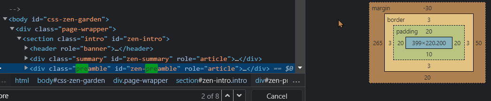

Open de pagina http://www.CSSzengarden.com/163/ en selecteer in de DOM-tree het element met id="zen-preamble".
Als je op het Styles tabblad naar onder scrollt kun je netjes zien wat de afmetingen zijn van de margin (oranje), border (lichtoranje), padding (groen) en content (blauw) van dit element.
